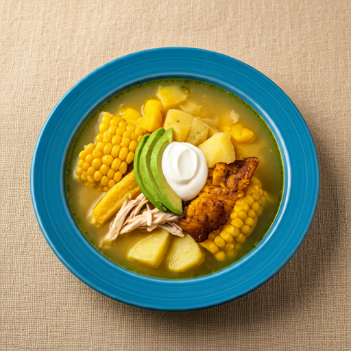

Ajiaco Bogotano: Un Sabor de Colombia

Con raíces que se remontan a la época precolombina, el ajiaco es un plato que ha evolucionado a lo largo de los siglos, incorporando ingredientes y técnicas culinarias de diferentes culturas.
Hoy en día, es considerado uno de los platos más representativos de Colombia.
Su preparación, que requiere paciencia y cuidado, es una tradición que se transmite de generación en generación.
INGREDIENTES
- pollo pechuga de pollo
- papa criolla
- papa sabanera
- papa pastusa
- mazorca tierna
- guascas
- cebolla
- ajo
- crema de leche
- aguacate
PREPARACION
- sofrito:En una olla, sofríe la cebolla y el ajo picados hasta que estén transparentes.
- Caldo de pollo:Agrega el pollo con hueso y las mazorcas partidas a la olla con el sofrito. Cubre con agua y lleva a ebullición. Reduce el fuego y cocina hasta que el pollo esté suave.
- Guascas:Mientras tanto, remoja las guascas secas en agua caliente durante 30 minutos.
- Papas:Pela y corta las papas en trozos grandes. Agrega las papas y las guascas remojadas a la olla con el pollo.
- Sazón:Sazona con sal y pimienta al gusto.
- Cocción:Cocina a fuego medio-bajo durante aproximadamente 1 hora o hasta que las papas estén suaves.
- Desmenuzar el pollo:Retira el pollo de la olla y desmenúzalo.
- Servir:Sirve el ajiaco caliente en platos individuales. Acompaña con el pollo desmenuzado, mazorca, aguacate en cubos, alcaparras y una cucharada de crema de leche.
Consejos adicionales:
Para un sabor más intenso, puedes tostar ligeramente las guascas antes de remojarlas y Si deseas un ajiaco más espeso, puedes licuar una parte de las papas y agregarla al caldo.